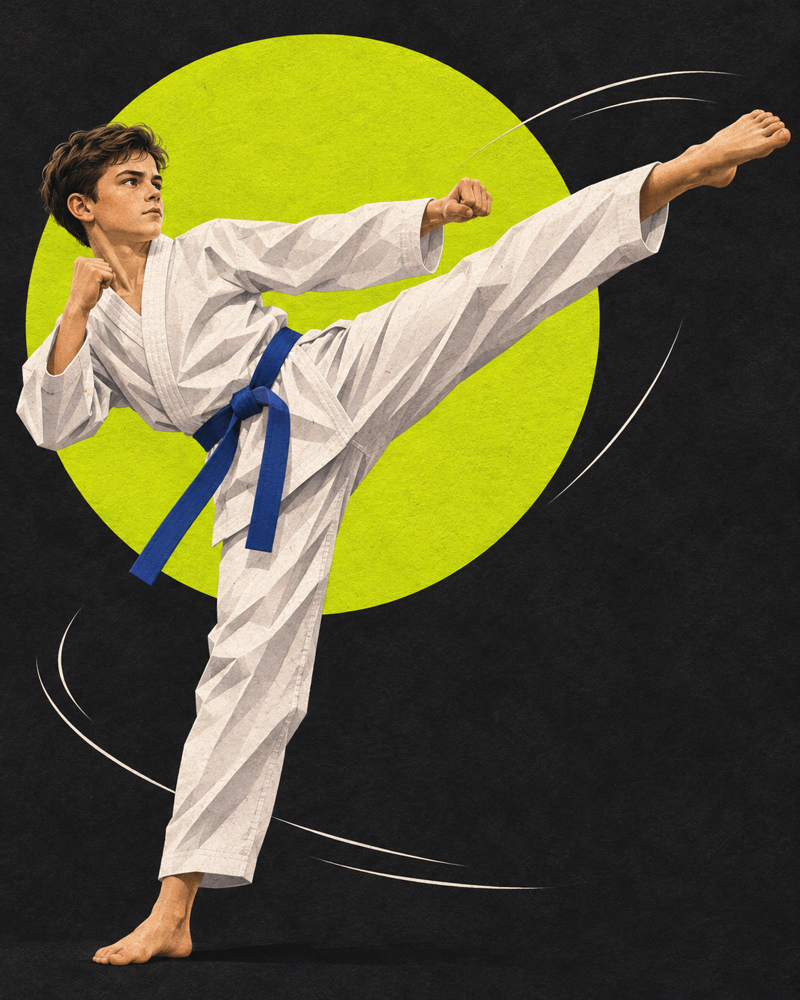

Чувствовать своё тело
Упражнения на координацию, равновесие и гибкость. От простых движений — к осознанной технике.
ДЕТСКАЯ СЕКЦИЯ · ТХЭКВОНДО GTF
Большой путь начинается с маленького шага на татами. Учимся двигаться, уважать друг друга и верить в свои силы.
Первый шаг в тхэквондо ↗Концепт секции для портфолио. Запись пока не открыта.

01 / БОЛЬШЕ, ЧЕМ СПОРТ
Не обязательно быть смелым,
чтобы начать.
Упражнения на координацию, равновесие и гибкость. От простых движений — к осознанной технике.
Слушать задание, замечать детали и пробовать снова. На тренировке важен собственный прогресс.
Поклон, правила и работа в паре помогают понять: сила начинается с самоконтроля.
02 / НАЧАЛО ПУТИ
Первое знакомство — без гонки за результатом. Ребёнку важно освоиться, а родителю — понять подход к занятиям.
Обсуждаем опыт ребёнка, ожидания и вопросы. Возрастную группу и возможность посещения уточняем у тренера.
Разминка, базовые упражнения и знакомство с правилами. Нагрузку подбирает тренер.
После знакомства обсуждаем продолжение занятий. Расписание, место и стоимость будут опубликованы после подтверждения.
03 / РЯДОМ НА ПУТИ
Преподаёт тхэквондо детям
Тхэквондо — часть моей жизни, которой я делюсь с детьми. В этом проекте я объединил два интереса: преподавание и разработку.
Сайт помогает родителям познакомиться с идеей занятий и подготовить вопросы до первого посещения.
Здесь нет вымышленных регалий, отзывов и обещаний результата. Информацию о действующей секции добавим после проверки.
04 / РОДИТЕЛЯМ
Начать знакомство можно без спортивного опыта. Подходящую группу и нагрузку определяет тренер с учётом возраста и подготовки ребёнка.
Удобную спортивную одежду и воду. Требования к обуви, форме и допуску к занятиям нужно заранее уточнить у тренера.
Не спешите с покупкой экипировки до разговора с тренером: он подскажет требования секции и подходящий размер.
Это демонстрационный сайт. Реальные адрес, расписание, стоимость и контакты пока не опубликованы, чтобы не вводить родителей в заблуждение.
Сейчас доступен только демонстрационный сценарий. Он не отправляет заявку и не собирает персональные данные.
05 / ВАШ ПЕРВЫЙ ШАГ
Посмотрите, как может выглядеть знакомство с секцией. Выберите интересующее направление — получите подсказку для первого разговора.
ДЕМО · БЕЗ ОТПРАВКИ ДАННЫХ